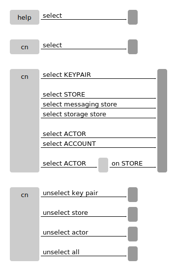

cn select
Shows the current selection.
cn select KEYPAIRSelects KEYPAIR on this terminal. Some commands will use this key pair by default.
cn unselect key pair
Removes the key pair selection.
cn select STORESelects STORE on this terminal. Some commands will use this store by default.
cn unselect store
Removes the store selection.
cn select ACTORSelects ACTOR on this terminal. Some commands will use this store by default.
cn unselect actor
Removes the actor selection.
cn unselect
Removes any selection.
Syntax
